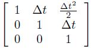

I intend to develop a gaze anticipation model in a top-down approach. In the past there have been many saliency models that can focus on relevant areas of a video just like a human eye fixates. But one crucial difference is the human eye can learn to anticipate the trajectory of an object very quickly in an unsupervised way. A sportsperson knows the importance of trajectory estimation better than anyone else. For example, in cricket it is very crucial that the batsman estimates length, bounce and type (swing, spin etc.) of the delivery in a fraction of seconds. In a study three skilled batsmen facing medium paced deliveries looked at the ball for the first 100-150ms of flight and then made a rapid glance (or saccade) at approximately 50-80% of the ball flight duration to the predicted ball bounce location (Land & McLeod, 2000). This kind of anticipation comes with prolonged training.
In this project a much simplistic scenario will be considered wherein all the objects are round (deformable) and bounce off various surfaces according to the laws of physics. In the training phase, system sets the parameters of a Kalman Filter such as, Transition matrix, correlation etc. After the training phase the system learns facts like “Red dotted balls are bouncy” etc.
Initially, the ball will be tracked using visual cues. There are many segmentation techniques that can be used to extract out the object and track it. But since the shape of the object is known, Hough transform does quite well. It’s a simple idea where an edge detector (Canny) is used to get rough boundaries. The resultant image has lot of unconnected components. Hough transform then takes the parameterized equation of the object’s contour and for each point detected by the edge detector, it up votes a parameter set if the object with those particular parameters can pass through that point. Finally, the parameter set with highest number of votes gives object’s location, size etc.
The Kalman filter model assumes the true state at time k is evolved from the state at (k-1) according to
At time k an observation (or measurement) zk of the true state xk is made according to
where Hk is the observation model which maps the true state space into the observed space and vk is the observation noise which is assumed to be zero mean Gaussian noise with covariance Rk
The initial state, and the noise vectors at each step are all assumed to be mutually independent. In our case, Bk will be a null vector. Fk can be easily modelled to incorporate the kinematics and dynamics of the object. For example, the free flight of the object in the air (neglecting air resistance) can be modelled by choosing
Fk = 
where, state xk is chosen as [x, v, a]T where, 'x' is position, 'v' the velocity and 'a' the acceleration. 'Δt' is the sampling period of the video sequence.
But, instead of hard-coding the transition matrix, we can learn the entries by boiling down the problem to a regression problem of fitting a 4D plane through the training examples for each entry in the state vector.
Once the modelling is done, prediction and update routines are run several times to achieve the tracking. The best part of the Kalman filter is that the transition matrices need not be precise and prediction routine can be run multiple times before the next measurement to achieve the anticipation.
The results can finally be compared with human gaze anticipation to come up with a performance index.
REFERENCES:
[1] Perše, Matej, et al. "Physics-based modelling of human motion using kalman filter and collision avoidance algorithm." International Symposium on Image and Signal Processing and Analysis, ISPA05, Zagreb, Croatia. 2005.
[2] http://en.wikipedia.org/wiki/Kalman_filter
[3] Land, Michael F., and Peter McLeod. "From eye movements to actions: how batsmen hit the ball." Nature neuroscience 3.12 (2000): 1340-1345.